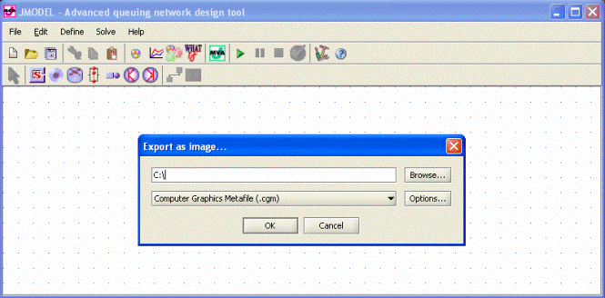
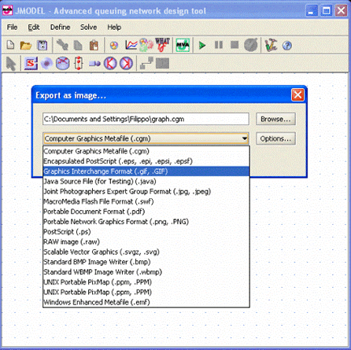
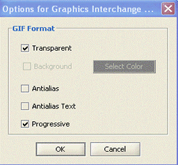
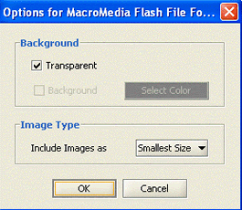

_____________________
When you want to export the model drawn as image select this command from menu Edit and a form will appear. In this form you have to insert a path where you want to save the image and its format.

Select the format from the list that appears in the panel (see the following figure) :

For each format it is possible to define some options. In the following examples, two different format saving options are shown.
 
Option for Gif format and Macromedia Flash format
To export the model:
Describe the path where the file should be saved
Select the format
Choose the options